DPC (DPP) Screening Methods for Nonnegative Lasso
Lasso is a widely used spase modeling technique to find sparse representations of an input signal. If we require the coefficients of the sparse representations to be nonnegative, the resulting model is known as the nonnegative Lasso.
Similar to standard Lasso，the DPC screening rule for nonnegative Lasso is also called DPP (Dual Projection onto Polytope).
DPP can be integrated with any existing solvers for nonnegative Lasso. The code will be available soon. The implementation of the DPP rule is very easy.
References
Two-Layer Feature Reduction for Sparse-Group Lasso via Decomposition of Convex Sets. Spotlight
Jie Wang and Jieping Ye.
NIPS 2014. [Code Download]
Formulation of Nonnegative Lasso
Let 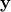 denote the 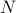 dimensional response vector and 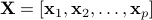 be the 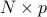 feature matrix. Let  be the regularization parameter. The nonnegative Lasso problem is formulated as the following optimization problem:
be the regularization parameter. The nonnegative Lasso problem is formulated as the following optimization problem:
where is the set of all vectors in with nonnegative components. The dual problem of nonnegative Lasso is
We denote the primal and dual optimal solutions of nonnegative Lasso by  and 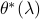, respectively, which depend on the value of 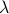. and are related by
and 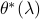, respectively, which depend on the value of 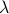. and are related by
Moreover, it is easy to see that the dual optimal solution is the projection of 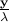 onto the dual feasible set, which is a polytope.
Enhanced DPP (EDPP) rule for nonnegative Lasso
Let us define
For all , we have
In other words, the nonnegative Lasso problem admits closed form solutions when 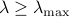.
Let 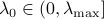 and 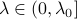. We define


For the nonnegative Lasso problem, suppose we are given a sequence of parameter values 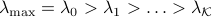. Then for any integer
 , we have if 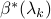 is known and the following holds:
, we have if 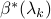 is known and the following holds:
To start from 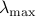, it is worthwhile to note that
 and 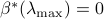.
and 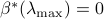. At the
 step, suppose that is known. To determine the zero coefficients of
step, suppose that is known. To determine the zero coefficients of  , EDPP needs to compute 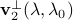, which depends on 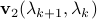 and
, EDPP needs to compute 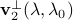, which depends on 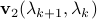 and  . Thus, we need to compute
. Thus, we need to compute  . Indeed, can be computed by
. Indeed, can be computed by  .
.After EDPP tells you the zero coefficients of
, the corresponding features can be removed from the optimization and you can apply your favourite solver to solve for the remaining coefficients of . Then, go to the next step until the Lasso problems at all given parameter values are solved.